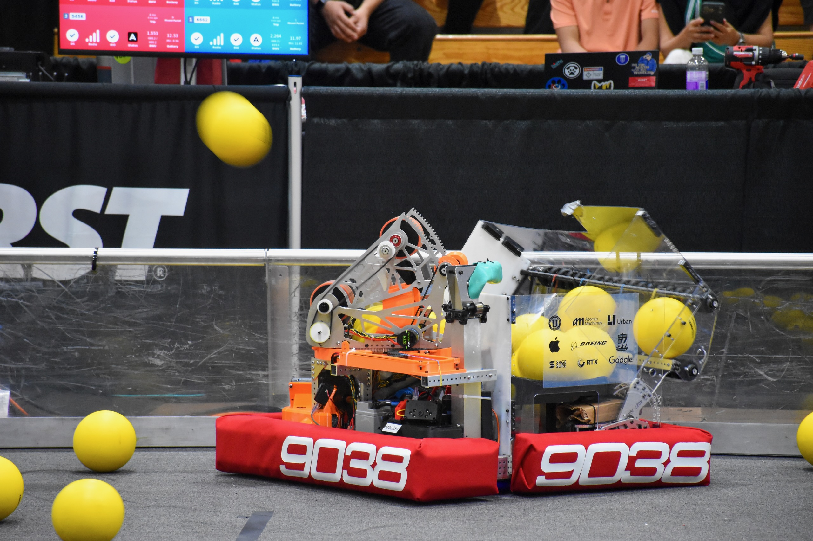
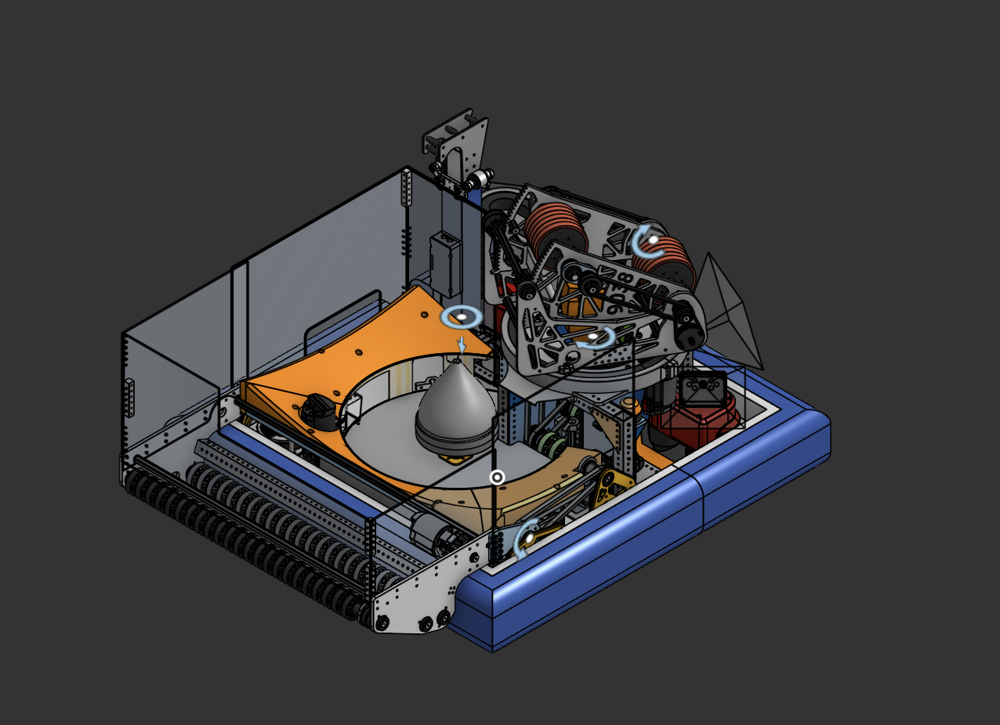

FRC 9038 2026 Competition Robot: Claude
Turreted ball shooting robot with 40 ball capacity inside a 28" x 27" x 26" starting footprint. Utilized a turret, computer vision, and a variable angle shooter to easily score up to 9 6" diameter balls/second from anywhere in the allowable area. Won 3 playoff matches across two competitive events as the main scoring robot and won Excellence in Engineering at the East Bay District Event, by far the best performance in our team's history.
I personally led the full design process, ideating and creating the top-down layout, the 1.25" tall turret assembly, the drivebase, and the spindexer. I also led other team members through the design and fabrication of the shooter, climber, kicker indexer, and intake.
(Please note that this robot was named after the beloved albino alligator at the California Academy of Sciences, not the generative AI model.)